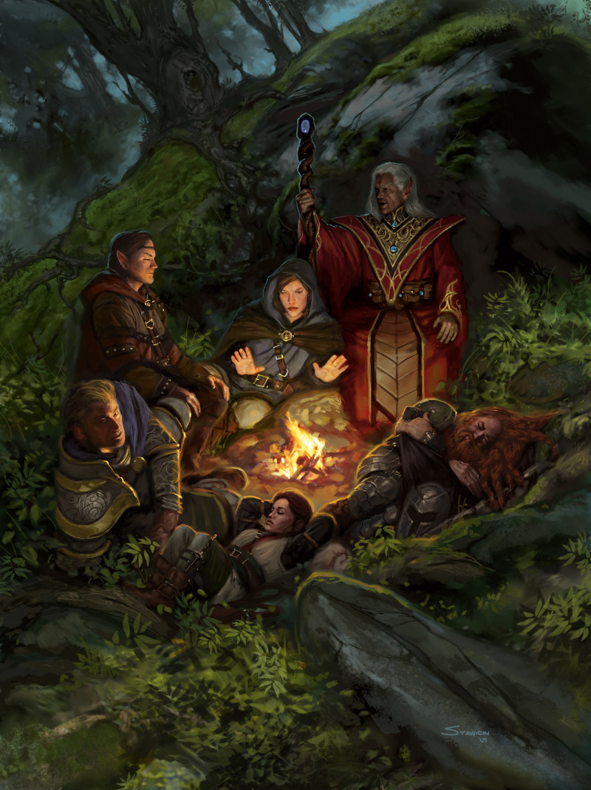

Options de personnalisation
La combinaison de vos valeurs de caractéristiques, de votre race, de votre classe et de votre historique détermine les capacités de votre personnage dans le jeu, et les détails personnels que vous créez vous distinguent de tous les autres personnages. Même avec votre classe et votre race, vous avez accès à des options pour affiner ce que votre personnage peut faire. Cependant, certains joueurs, avec l’accord du MD, souhaitent faire un pas de plus.
Ce chapitre décrit deux ensembles de règles optionnelles pour personnaliser votre personnage : le multiclassage et les dons. Le multiclassage vous permet de jumeler des classes, et les dons sont des options spéciales que vous pouvez choisir à la place de l’augmentation des caractéristiques au fur et à mesure que vous montez en niveau. Votre MD décide si ces options sont disponibles dans une campagne.
← Voir le menu à gauche pour naviguer.
